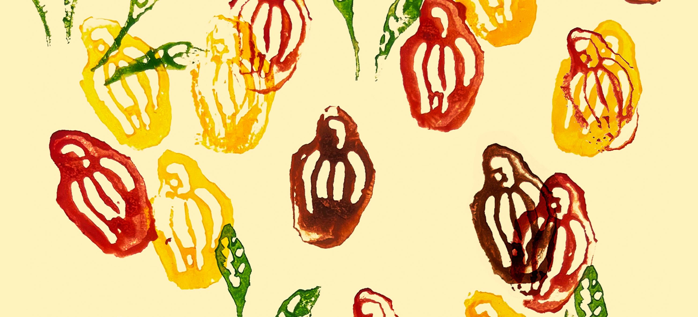
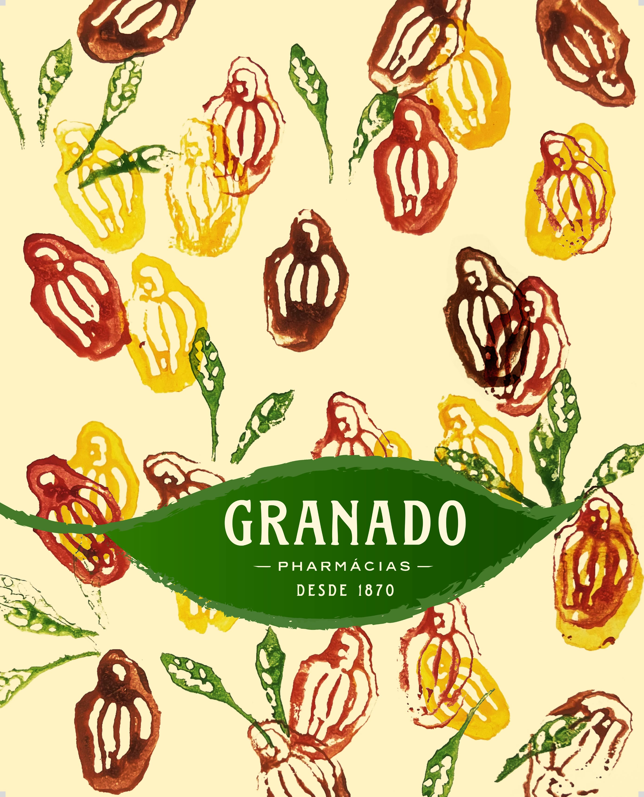
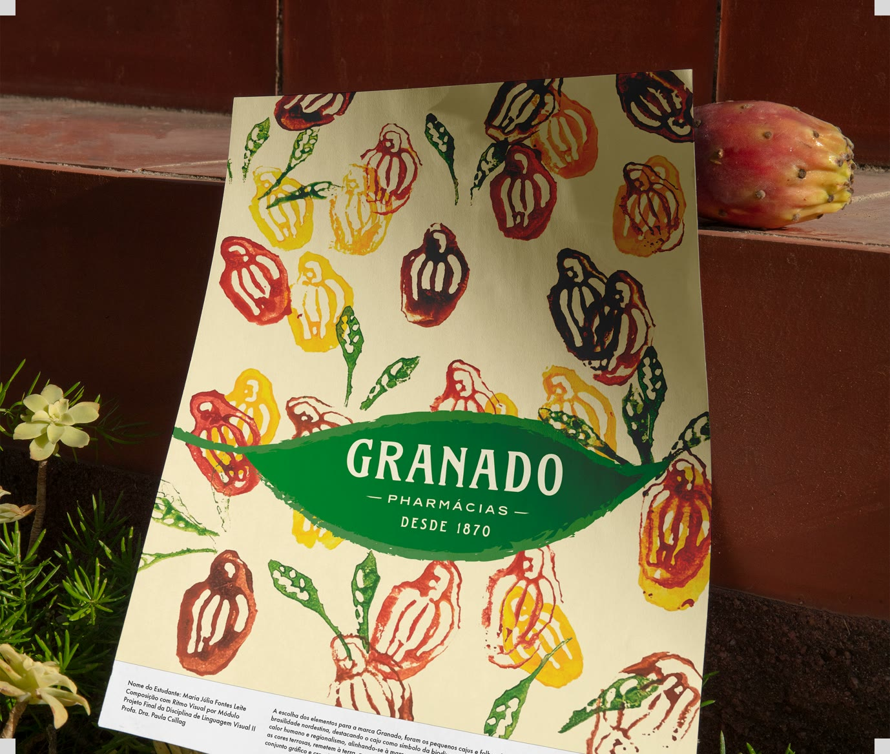
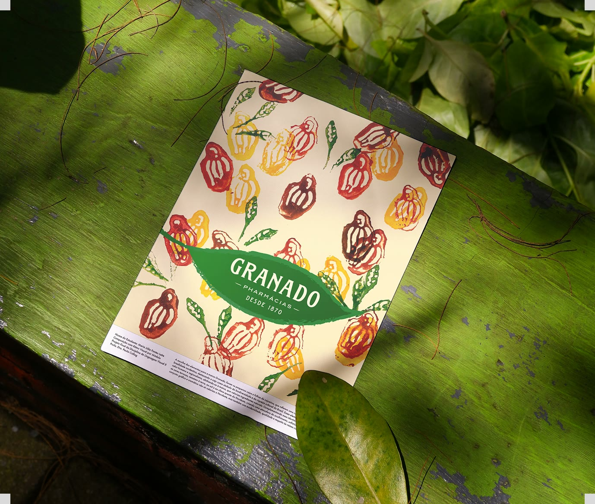
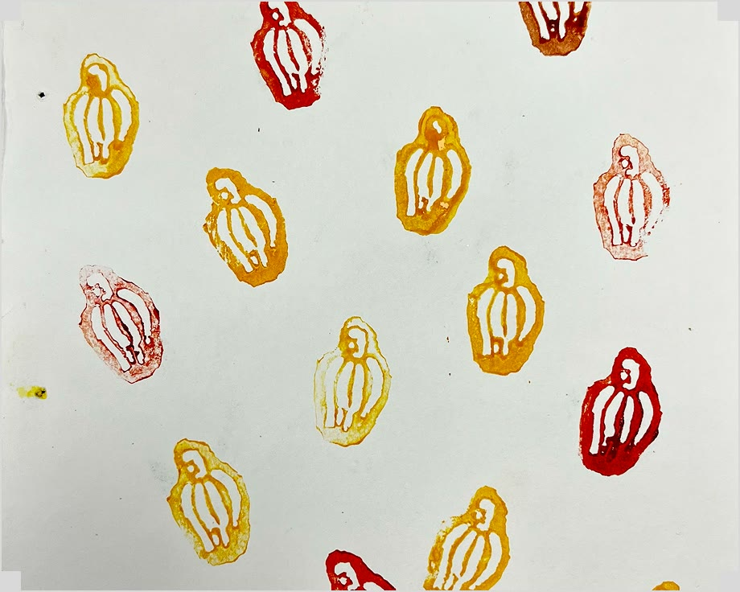
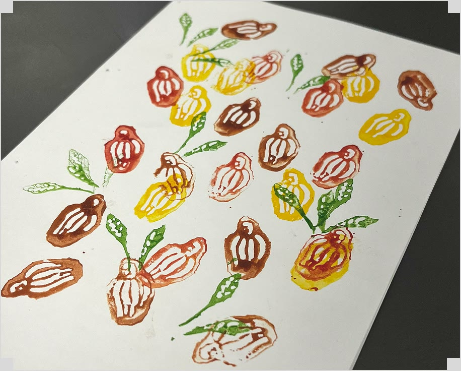
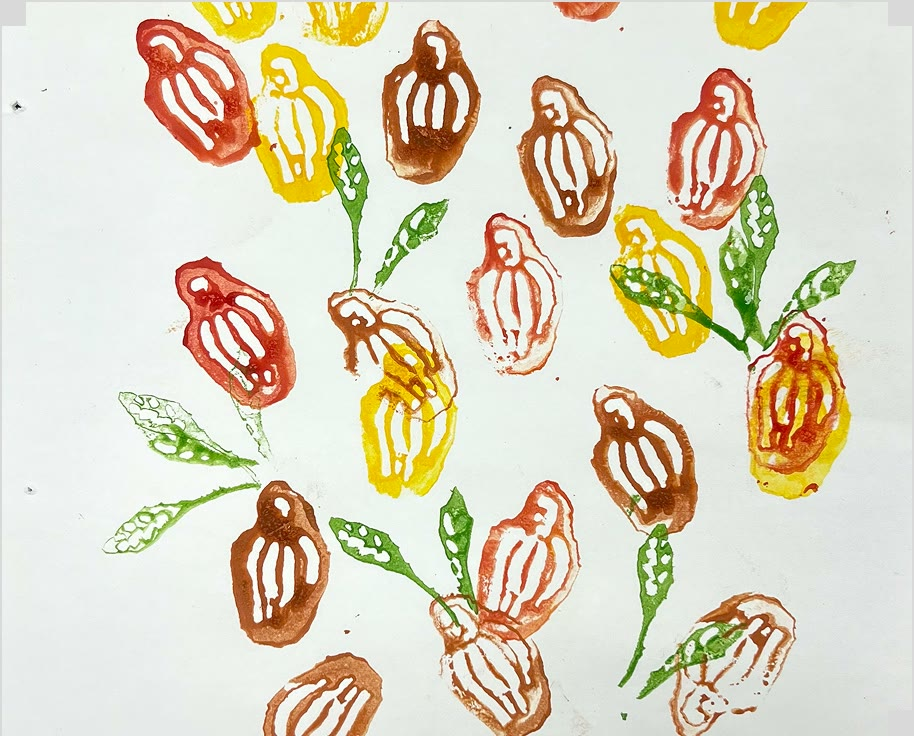

Cartaz Granado
Cartaz nasceu com o conceito de composição de elementos livre, a escolha dos elementos para a marca Granado, foram os pequenos cajus e as folhas de cajueiros, que refletem uma conexão com a brasilidade nordestina, destacando o caju como símbolo da riqueza cultural do Brasil. Complementando essa identidade visual, foram escolhidas as cores terrosas, que remetem à terra, ao sol e ao clima quente do Nordeste, criando uma atmosfera de acolhimento, sofisticação e tradição.
DisciplinaLinguagem Visual
Ano2024-2






clique para carimbar cajus e folhas